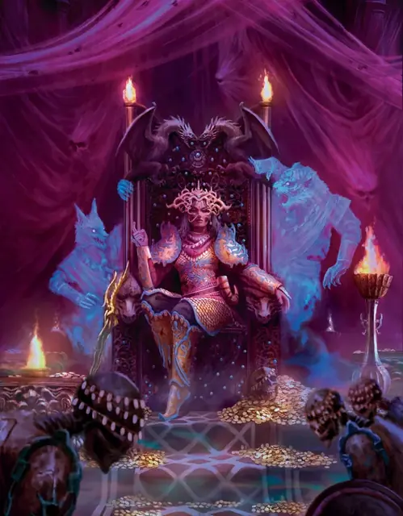

Рамья Васавадан
Ramya Vasavadan
Средняя Нежить, Хаотичная Злая, именной НИП

Класс Защиты 18 Инициатива +15 (25)
Хиты 190 (20к8 + 100)
Скорость 30 футов
| мод | спас | ||
|---|---|---|---|
| СИЛ | 14 | +2 | +2 |
| ЛОВ | 20 | +5 | +5 |
| ТЕЛ | 20 | +5 | +5 |
| мод | спас | ||
|---|---|---|---|
| ИНТ | 12 | +1 | +13 |
| МДР | 16 | +3 | +11 |
| ХАР | 18 | +4 | +12 |
Иммунитеты Некротический, Яд; Испуганный, Истощение, Отравленный
Чувства Тёмное зрение 120 футов, пассивное Восприятие 18
Языки Общий, Бездны
Опасность 15 (13 000 опыта или 15 000 опыта в Домене; БВ +5)
Особенности
Восстановление Тёмной владычицы. Если Рамья умирает, её тело растворяется в тумане и спустя 1к10 недель возрождается с полными Хитами в где-то в Калакери.
Легендарное сопротивление (3/день, или 4/день в Домене). Если Рамья проваливает спасбросок, она вместо этого может в нём преуспеть.
Сопротивление магии. Рамья совершает с Преимуществом спасброски от заклинаний и прочих магических эффектов.
Военачальница нежити. Существа типа Нежить по выбору Рамьи (исключая её саму) в 60-футовой Эманации, исходящей от неё, совершают с Преимуществом броски атаки и спасброски. Она не может пользоваться этой особенностью, если Недееспособна.
Действия
Мультиатака. Рамья совершает три атаки Клинком ужаса.
Клинок ужаса. Бросок рукопашной атаки: +10, досягаемость 5 фт. Попадание: 12 (2к6 + 5) Рубящего урона плюс 9 (2к8) Некротического урона.
Пламя возмездия (Перезарядка 5–6). Спасбросок Ловкости: Сл 17, каждое существо в 20-футовой Сфере с центром в точке, видимой Рамьей в пределах 120 футов. Провал: 28 (8к6) урона Огнём плюс 28 (8к6) Некротического урона. Успех: Только половина урона.
Сотворение заклинаний. Рамья сотворяет одно из следующих заклинаний, не нуждаясь в Материальных компонентах (заклинательная характеристика — Харизма, Сл спасброска заклинаний 17):
Неограниченно: Призрачный скакун
1/день: Поднятие мертвеца
Бонусные действия
Иллюзорное обличье. Рамья сотворяет Смену обличья (заклинательная характеристика — та же, что для Сотворения заклинаний). Заклинание длится до тех пор, пока Хиты Рамьи не опустятся до 80 или ниже или пока она не совершит действие Пламя возмездия. Проверки Интеллекта (Расследование) для определения её истинного облика совершаются с Помехой. По окончании заклинания все существа в 30-футовой Эманации, исходящей от Рамьи, подвергаются следующему эффекту. Спасбросок Мудрости: Сл 17 (Конструкты и Нежить преуспевают в спасброске автоматически). Провал: Цель Испугана на 1 минуту. Испуганная таким образом цель совершает спасброски с Помехой.
Реакции
Парирование. Условие: По Рамье попадает бросок рукопашной атаки, пока она держит оружие. Эффект: Рамья получает бонус +5 к КЗ против этой атаки, что может привести к её промаху.
Легендарные действия
У этого существа есть 3 использования Легендарных действий (или 4 использования в Домене); оно может немедленно после окончания хода другого существа потратить одно использование, чтобы совершить одно из следующих действий. Существо восполняет все потраченные использования в начале каждого своего хода.
Веление ужаса. Рамья сотворяет Приказ (заклинательная характеристика — та же, что для Сотворения заклинаний). Рамья не может совершить это действие снова до начала своего следующего хода.
Выпад. Рамья перемещается на расстояние вплоть до половины своей Скорости и совершает одну атаку Клинком ужаса.
Слово безмолвия. Спасбросок Телосложения: Сл 17, одно видимое Рамьей существо в пределах 120 футов. Провал: 21 (6к6) Психического урона, и цель проклята до конца своего следующего хода. Проклятая цель не может говорить и сотворять заклинания с Вербальным компонентом. Успех: Только половина урона.
Бонус мастерства +5
Рамья Васавадан
Тёмная владычица, чья власть вечно шатка
Рамья Васавадан отчаянно борется за власть над Калакери: раз за разом она одерживает победы и терпит поражения в жестоком противостоянии с не менее непримиримыми братом и сестрой. В отличие от большинства Тёмных владык, Рамья с трудом удерживает власть над своим доменом и потому ищет союзников в борьбе против сородичей и их коварных приспешников.
В истинном обличье Рамья — немёртвое чудовище, но иллюзии скрывают её уродство. Выдают её лишь ледяная кожа и отражение, которое всегда выглядит иссохшим и устрашающим.
Хотя брат и сестра Рамии, Ариджани и Рива, не являются Тёмными владыками Калакери, именно они разжигают восстания и служат источником мучений Рамьи.
История Рамьи
Династия Васавадан правила Калакери с незапамятных времён. Рамью Васавадан отец лично избрал наследницей, однако в мрачный день его смерти брат Рамьи, Ариджани, провозгласил себя новым махараджей.
Рамья отказалась уступить брату, вместе со сторонниками захватила его и собиралась казнить. Но её сестра, Рива, призвала к милосердию. Вместо казни Рамья заточила Ариджани в темницу и взошла на престол как махарани — «царица царей».
В последующие годы Рамья правила честно и справедливо. Но в её тени Рива плела заговор с мятежниками, которые в конце концов освободили Ариджани и подбили дворян по всей стране на бунт.
Сожалея о своём милосердии, Рамья бросила армию на безжалостное подавление мятежников. Рива и Ариджани противопоставили превосходящим силам Рамьи засады и обман. Вновь сыграв на сочувствии сестры, они обманули Рамью, ворвались в Лазурную Цитадель и предали её смерти через удушение. С последним вздохом Рамия прокляла брата и сестру, нарекая их кровожадными зверями. Вскоре на Калакери обрушился чудовищный муссон, неся с собой Туманы.
Шторм терзал Калакери неделями. В самый его разгар Рамья вернулась из мёртвых и воззвала к павшим на её службе. Верный и после смерти, легион трупов присоединился к возрождённой махарани, осадил Лазурную Цитадель и перебил Ариджани и Риву. Их черепа Рамья похитила и заложила в основание будущей Башни Предателей.
Козни Ариджани и Ривы не закончились с их смертью. Они тоже возродились, превращённые в чудовищные воплощения своих алчных желаний. Ариджани стал подобен ракшасу, а Рива обрела обличье арканалота.
Раздирающий Калакери конфликт теперь продолжается в Землях Туманов. Он обрекает страну на бесконечную войну, а её народ — на служение чудовищам.
Домен Рамьи
Пока Рамья контролирует Сапфировый трон, Калакери, её домен, изменяется из-за её присутствия, что создаёт следующие эффекты:
• Закрытие границ. Когда Рамья находится в домене, она способна по желанию закрывать или открывать границы Калакери. Когда границы закрыты, Туманы вокруг Калакери высасывают жизнь из тех, кто в них оказывается. Существо, впервые за ход входящее в Туманы или начинающее в них ход, — если оно не Конструкт или Нежить — должно преуспеть в спасброске Телосложения Сл 20, иначе получает 1 уровень Истощения. Существо совершает этот спасбросок лишь один раз в ход.
• Извечная армия. Спустя 24 часа после смерти любой Гуманоид Среднего или Маленького размера, убитый в бою, восстаёт в виде Умертвия под контролем Рамьи, если его не вернули к жизни или его тело не уничтожено.
Если Рамья умирает либо если её брат или сестра контролируют Сапфировый трон, все эти эффекты мгновенно исчезают. Они возникают вновь, если Рамья возрождается и снова контролирует Сапфировый Трон (см. Восстановление Тёмной владычицы).